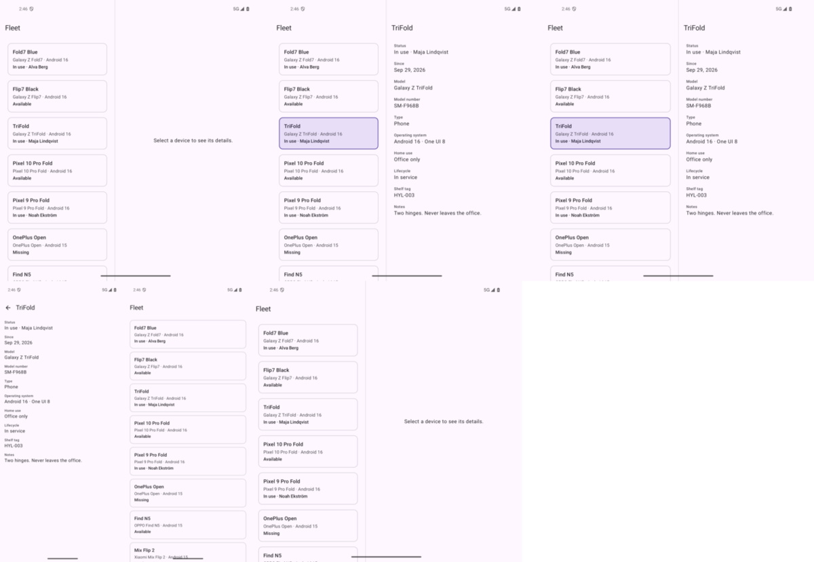
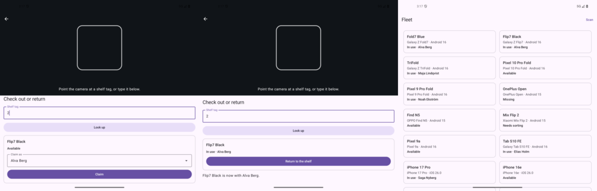
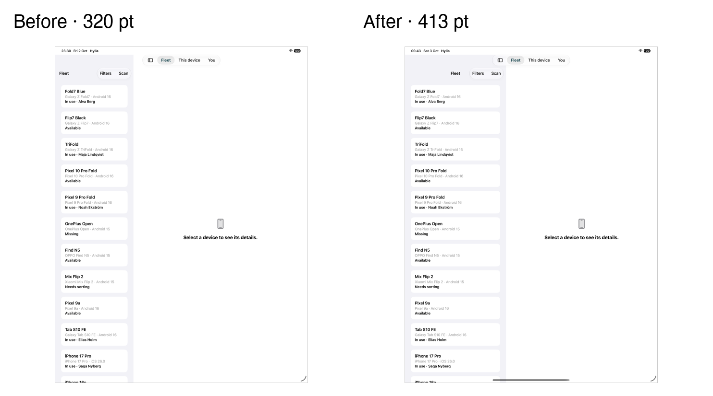

Adaptive layout for foldables, taught through a real app: Umain's QA device shelf, built twice, natively, on Android and iOS.
Kotlin · Jetpack Compose · Navigation 3 Swift 6 · SwiftUI Android 14+ · iOS 18+ 20 chapters

Layout reads the window's measured size and its folds. Never the screen, the orientation or the model name.
A tri-fold reports two hinges. Panes are cut at every one, and a pane narrower than 360 collapses rather than squeezes.
Book, tabletop with the scanner above the crease, and a glanceable cover surface for small outer screens.
Every screen is checked at the largest text sizes, with TalkBack and VoiceOver, and audited automatically.
Chapter 19 writes the common bugs deliberately, and tests that they really fail.
Unit tests for every rule, UI tests on emulators and simulators, and screenshot matrices across fold states and text sizes.


No accounts, no credentials, no network beyond dependencies. Both apps run from the fixture.
# Android
cd android && ./gradlew :app:installDebug
# iOS
cd ios && xcodegen generate && open Hylla.xcodeprojAlso: decisions, versions, hardware findings.